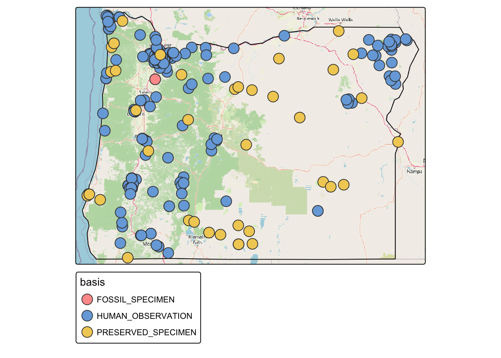
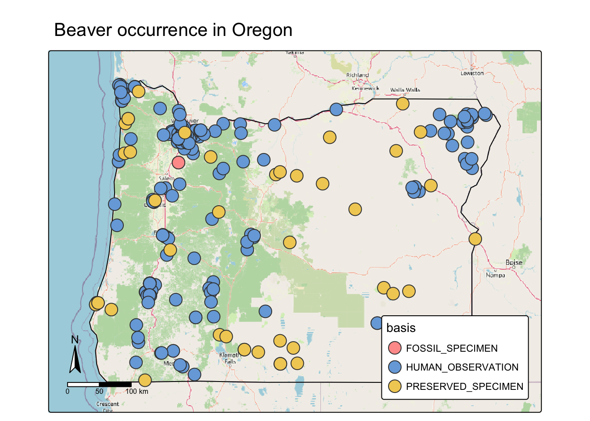
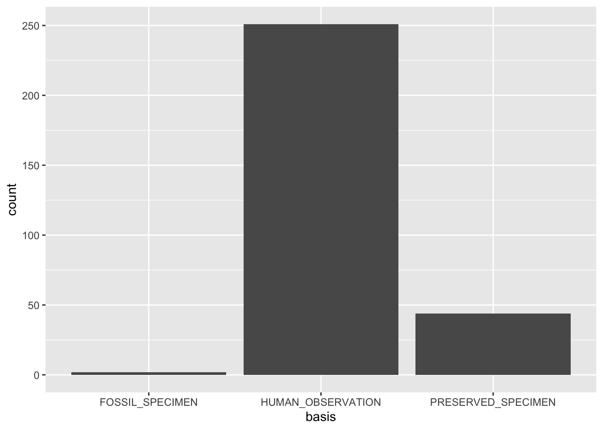
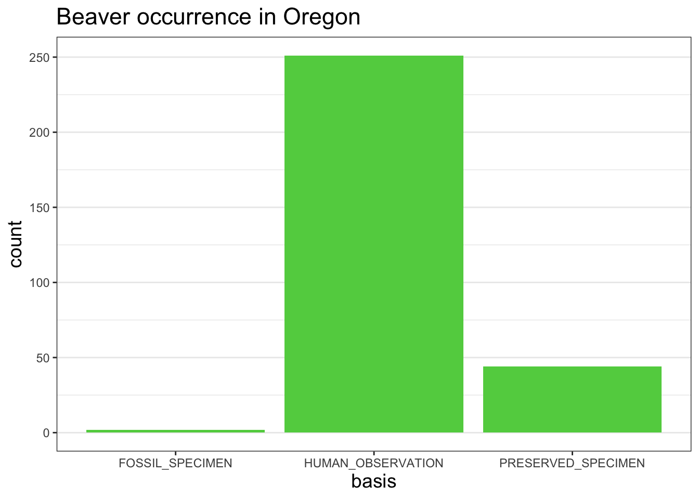

library(tidyverse)
library(sf)
library(tmap)R Intro
Load R packages.
Read CSV
Read GBIF CSV.
beaver_df <- read_csv('data/raw/Castor_canadensis-12106.csv')Preview GBIF data.
glimpse(beaver_df)Rows: 297
Columns: 16
$ gbifID <dbl> 2803114036, 2802971136, 2802941035, 2802…
$ name <chr> "Castor canadensis", "Castor canadensis"…
$ basis <chr> "HUMAN_OBSERVATION", "HUMAN_OBSERVATION"…
$ catalogNumber <chr> "50723465", "50723148", "49373197", "493…
$ collectionCode <chr> "Observations", "Observations", "Observa…
$ collectionID <chr> NA, NA, NA, NA, NA, NA, "http://grbio.or…
$ institutionCode <chr> "iNaturalist", "iNaturalist", "iNaturali…
$ decimalLatitude <dbl> 45.38804, 45.15445, 44.69292, 44.75682, …
$ decimalLongitude <dbl> -117.1105, -117.1680, -118.0682, -118.14…
$ coordinateUncertaintyInMeters <dbl> 27190, 27222, 27285, 27285, 27285, 5, NA…
$ scientificName <chr> "Castor canadensis Kuhl, 1820", "Castor …
$ year <dbl> 2020, 2020, 2020, 2020, 2020, 2020, 2003…
$ month <dbl> 6, 6, 6, 6, 6, 6, 6, 5, 6, 6, 5, 5, 5, 5…
$ day <dbl> 23, 23, 12, 12, 12, 10, 23, 19, 1, 1, 31…
$ verbatimLocality <chr> "Oregon, US", "Oregon, US", "Baker Count…
$ eventDate <dttm> 2020-06-23 11:45:46, 2020-06-23 11:07:4…Update GBIF data so that it can plotted on a map. st_as_sf() will create a vector point for each record using decimalLongitude and decimalLatitude, add a geometry column, and set the coordinate reference system.
beaver_sf <- st_as_sf(beaver_df,
coords = c('decimalLongitude', 'decimalLatitude'),
crs=4326,
remove=FALSE)Read GeoJSON
Read a GeoJSON file that has the boundaries for Oregon state.
oregon_sf <- read_sf('data/cleaned/oregon.geojson')Check if GBIF data and Oregon boundary have same CRS.
st_crs(oregon_sf) == st_crs(beaver_sf)[1] FALSEUpdate CRS for Oregon boundaries.
oregon_sf <- st_transform(oregon_sf, crs=st_crs(beaver_sf))
st_crs(oregon_sf) == st_crs(beaver_sf)[1] TRUEInteractive maps
Create interactive map.
tmap_mode("view")ℹ tmap mode set to "view".Create map with GBIF data and Oregon boundary. Color code each GBIF occurrence record using the basis field. Use Open Street Maps as basemap.
tm_shape(oregon_sf) +
tm_lines() +
tm_shape(beaver_sf) +
tm_symbols(fill='basis') +
tm_basemap("OpenStreetMap")Static maps
Create static map.
tmap_mode("plot")ℹ tmap mode set to "plot".Create map with GBIF data and Oregon boundary. Color code each GBIF occurrence record using the basis field. Use Open Street Maps as basemap.
tm_shape(oregon_sf) +
tm_lines() +
tm_shape(beaver_sf) +
tm_symbols(fill='basis') +
tm_basemap("OpenStreetMap")
Update map appearance. Add a north arrow, scale bar, and a title.
map <- tm_shape(oregon_sf) +
tm_lines() +
tm_shape(beaver_sf) +
tm_symbols(fill='basis') +
tm_basemap("OpenStreetMap") +
tm_compass(position = c("left", "bottom")) +
tm_scalebar(position = c("left", "bottom")) +
tm_title("Beaver occurrence in Oregon") +
tm_layout(inner.margins = c(0.1,.1),
legend.position=c("right", "bottom"),
legend.bg.color = 'white')
map
Save map as png image.
tmap_save(map, filename = "output/beaver_oregon.png", width = 7, height = 7)Bar charts
Create bar chart. Use basis values for the x axis.
ggplot(beaver_df) +
geom_bar(mapping=aes(x=basis))
Update chart appearance. Add color to the bars, a title, and custom theme.
chart <- ggplot(beaver_df) +
geom_bar(mapping=aes(x=basis), fill='75cd5e') +
labs(title = 'Beaver occurrence in Oregon') +
theme_bw() +
theme(title = element_text(size = 14),
panel.grid.major.x = element_blank(),
panel.grid.minor.x = element_blank())
chart
Save chart as png image.
ggsave('output/chart.png', chart, width = 5, height=5)